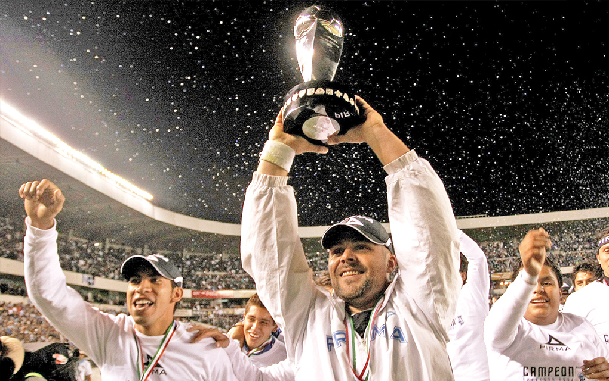

Top 3 Hitos del Club
La final del Clausura 2015
2015 · Liga MX

La primera final en la historia del club. Gallos llegó a la final del torneo Clausura 2015 de la mano de el Rey Midas, Víctor Manuel Vucetich. Tomó las tiendas del club a mitad de la temporada después de la salida de Nacho Ambriz. Gallos Blancos tenía un equipo con el jogo bonito en el que destacaban Danilinho, Sinha, William da Silva, Tiago Volpi y el histórico Ronaldinho. También dejando de fuera los brasileños, había otros jugadores históricos como Miguel Martínez, Emanuel el "Tito" Villa, Marco Jiménez, Ángel Sepúlveda, Mono Osuna, Yasser Corona, George Corral, Jonathan Bornstein. Desafortunadamente, el equipo no se pudo coronar campeón, pero logró darle una gran alegría a la afición de haber llegado a la final y haber jugado un gran torneo.
Ver en ESPNEl primer título de Gallos en primera división (2016)
2016 · Copa MX

El primer título del club en Primera División. La cita era un 2 de Noviembre de 2016, y la corregidora volvía a llenarse de alegría por albergar a los Gallos Blancos en otra final. Esta vez el rival eran las Chivas de Guadalajara, la Resistencia Albiazul se encargó de recibir a los jugadores con un tifo monumental el cual consistía en una calavera gigante haciendo alusión a la fecha en la que se jugaba la final. La calavera tenía un texto que decía "Juramos amarnos hasta la muerte" que reflejaba el amor de la afición por su equipo. El partido fue muy disputado, y el marcador final fue de un 0-0 por lo que se tuvo que definir al campeón en penales. Una tanda donde el arquero Tiago Volpi se convirtió en héroe al atajar dos penales y anotar uno. Todo el estadio comenzó a corear su nombre y a celebrar el primer título del club en Primera División. Sin duda una noche que pasó a la historia del club y permanece en la memoria de sus aficionados. Incluso posteriomente Gallos se coronó campeón de la Supercopa MX tras vencer 2-0 al Club América el 16 de Julio de 2017.
Nota Diario ASGallos vuelve a Primera División (2009)
2009 · Ascenso

En 2007, Querétaro perdió la categoría apenas un año después de haber ascendido a Primera División. Lejos de rendirse, el club se reconstruyó en la Primera A: ganó el Apertura 2008 y se ganó el derecho a disputar la final de ascenso de 2009 contra Mérida, campeón del Clausura. La serie fue de infarto. Querétaro ganó la ida 2-1, pero en Mérida, ante un estadio lleno, Fernando Beltrán empató el global 2-2 y obligó a tiempos extra. Todo se definió en penales, y fue Isaac Romo quien convirtió el tiro que devolvió a los Gallos Blancos a Primera, ocupando el lugar que dejó Necaxa tras su descenso. Fue el regreso que reencauzó al club y abrió la etapa que terminaría en la final de 2015 y el título de 2016.
Leer en Mediotiempo